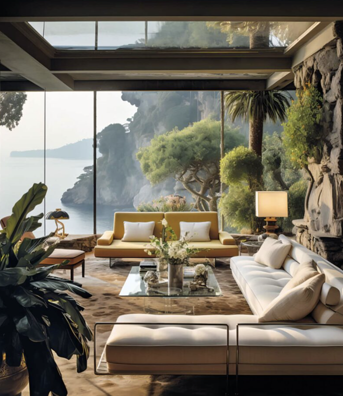

A curated perfumer-developed portfolio for a fast project start — or a bespoke signature scent created with a perfumer.
SILLAGE · ARCHITECTURAL & SPATIAL SCENTING
Architecture has
an atmosphere.
We give it scent.
For brands, events and spaces: choose a ready-made architectural scent or create a signature fragrance, then match it with the right diffusion system.
ONE APP · MULTIPLE SCENT SYSTEMSOne SILLAGE control layer for every validated compatible system.

ARCHITECTURAL MOODLight, material,
colour and scent.
colour and scent.
SILLAGE INTELLIGENCE · AI-NATIVE
From feeling to fitting system.
AI structures a multimodal brief, compares scent cues with room conditions and returns a transparent creative and technical starting point. Perfumers and specialists review the final formula, operating profile and hardware fit.
YOUR SCENT STORY“A sunlit arrival, cool stone, citrus leaves in open air.”
↗ Write▧ Moodboard♪ Song● Voice note
AI READS CREATIVE CUES · YOU STAY IN CONTROLOne SILLAGE control layer can be planned around validated compatible diffusion systems, while SILLAGE remains the customer-facing experience.
From a focused event to a recurring room program, quantities and delivery format are defined around the actual brief.
THE SILLAGE ADVANTAGE
One app.
Multiple scent systems.
Keep your scent experience in one place. SILLAGE can connect validated compatible systems to one customer-facing control layer, so your team manages intensity, timing, zones and cartridge service without learning a new interface for every room.
NO VENDOR NAMES. ONE SILLAGE EXPERIENCE. COMPATIBILITY IS CONFIRMED PER PROJECT.SILLAGE APPControl
your atmosphereIntensity · timing · zones
your atmosphereIntensity · timing · zones
FOCUSED ZONEROOM SCALEMULTI-ZONE
SILLAGE CONTROL · SYSTEM-AGNOSTIC
Give the room
its own atmosphere.
Light and temperature already have a control layer. SILLAGE gives scent the same consideration: one clear interface for intensity, timing, zones and pauses — designed to work across validated compatible scent systems.
CONTROL-READY CONCEPT · COMPATIBILITY, SITE SETUP AND LIVE INTEGRATION ARE CONFIRMED PER PROJECT.LOBBY · MORNING PROFILEActive
62%SCENT INTENSITY
Schedule08:00–18:00
ZoneWelcome area
ProfileSoft arrival
PauseAvailable
SILLAGE CONTROL LAYERValidated compatible systems● ● ●
WHERE SILLAGE LIVES
Built for shared experiences.
From one-off brand moments to recurring architectural scent programs.


THE SILLAGE METHOD
Perfumery meets
architecture.
We translate colour, light, surface, sound, movement and cultural context into an architectural scent direction. Perfumers, architects and interior designers shape the decision together — so a scent belongs to the space rather than sitting on top of it.
SAFETY & SENSORY RESEARCH
Research-informed
atmosphere design.
Safety: scent suitability depends on the intended application. SILLAGE works with relevant documentation and application-specific review; IFRA conformity documentation is confirmed for the final fragrance and use case.
Mood & sensory cues: current olfactory research connects scent with emotion, attention and autobiographical memory. We translate these insights — alongside colour, light and material — into considered atmospheres and experiential cues.
SILLAGE SERVICE
Digital guidance.
Human support.
A scent cartridge subscription keeps your system supplied on the cadence of your project. In the customer interface, the SILLAGE Assistant helps with everyday scent and device questions; a physical technical team handles installation, setup and on-site support.
your space needs it.
Regular refills, flexible rhythm and clear replacement guidance.
for quick answers.
Available to signed-in customers for product, scent and technical questions.
physical space.
Installation, calibration and expert escalation when the room needs a human eye.
ABOUT SILLAGE
Built at the
AI.WOMEN Hackathon.
This is a placeholder About section. SILLAGE was shaped as an AI-native concept for making architectural scent planning clearer, more visual and more controllable. Replace this text with the founding story, team and company details before launch.
PLACEHOLDER · [DATE / TEAM / COMPANY DETAILS]